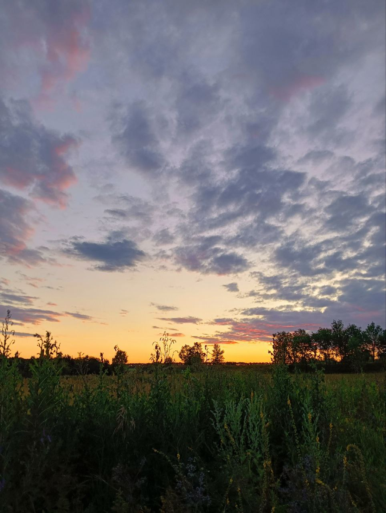

У меня большая, добрая семья, в которой меня очень любят. Моя мама самая красивая на свете, готовит очень вкусные оладья да и впринципе очень вкусно готовит.Люблю её. Папа мой может сделать всё что угодно, он у меня рукастый парень. Люблю его. Также у меня есть сестренка, зовут Анька, помню маленькую её на руках держал. Люблю её. Также у меня есть много домашних животных. вы спросите при чём тут они, а я отвечу, что жить без них не могу.(мда, чёт я мило расписал тут всё, но так и есть. каждый раз, когда я прихожу в свой любимый дом, я вспоминаю что такое счастье)
